CAD
SOLIDWORKS was used to develop the lattice geometry and create repeating patterns.
Project 01 · APSC 200/293 · 2024
Development of a porous lattice structure for an impact-absorbing sports mouthguard.
Team design project — Section 204, Group MMEB 4. My individual contribution can be found further down the page.

The project focused on developing a new shock-absorbing material structure for sports mouthguards. The design needed to balance safety, shock absorption, weight, stiffness, manufacturability, cost, and sport-specific requirements.
Because the structure would be 3D printed in a single material, every gain in one area had to be paid for somewhere else: a more porous lattice is lighter but less stiff, and a geometry that performs well in simulation can still be impossible to clean up after printing.
A single printable material, a 30 mm cube test structure, and a geometry that has to survive being scaled down to fit inside a mouthguard.
Eight stages from problem statement to a tested prototype. The last step is the one that changed the design.
Fifteen iterations across four lattice geometries produced four viable candidates for full evaluation.
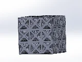
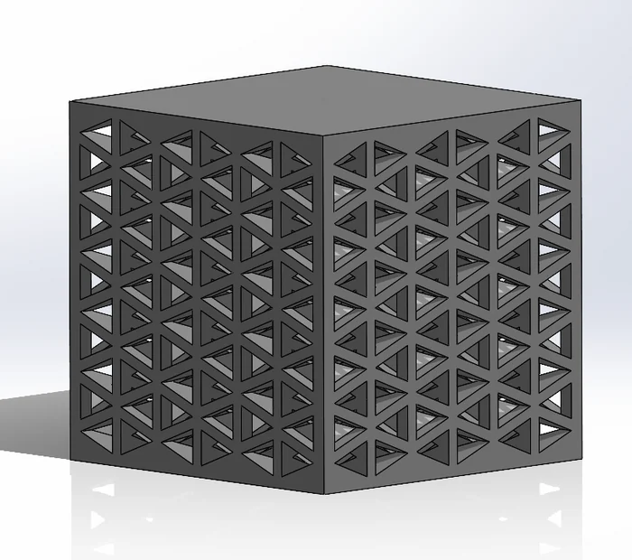
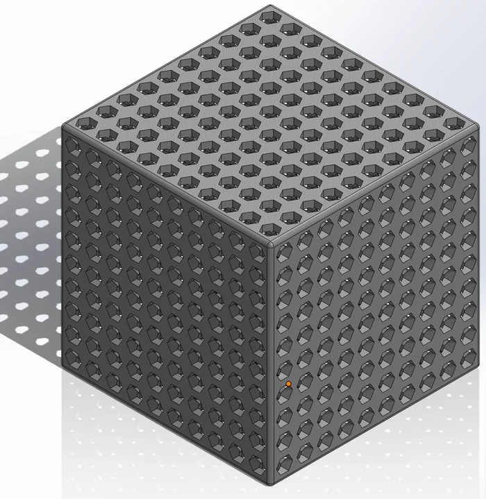
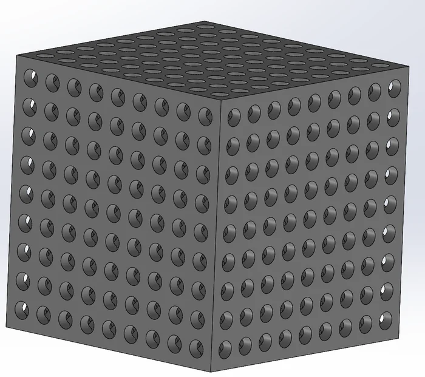
Each concept was scored on porosity, static and dynamic deflection, maximum stress, impact force, rebound, printability, and how far it could be optimized. Categories were weighted 1× to 3× according to their influence on the design.
The Pillared Lattice achieved the highest overall score in the weighted evaluation matrix. It provided a balance of shock absorption, stress performance, stiffness, printability, and optimization potential. Three of the four concepts scored closely, so the decision came down to the two judgement-based categories — printability and how much room the geometry left for further optimization. This was a team design decision made collectively from the evaluation matrix.
Three layers of evaluation, each one narrowing the uncertainty before the next.
SOLIDWORKS was used to develop the lattice geometry and create repeating patterns.
FEA was used to evaluate displacement, stress, stiffness and other performance metrics before physical prototyping.
The prototype was evaluated through static and dynamic testing.
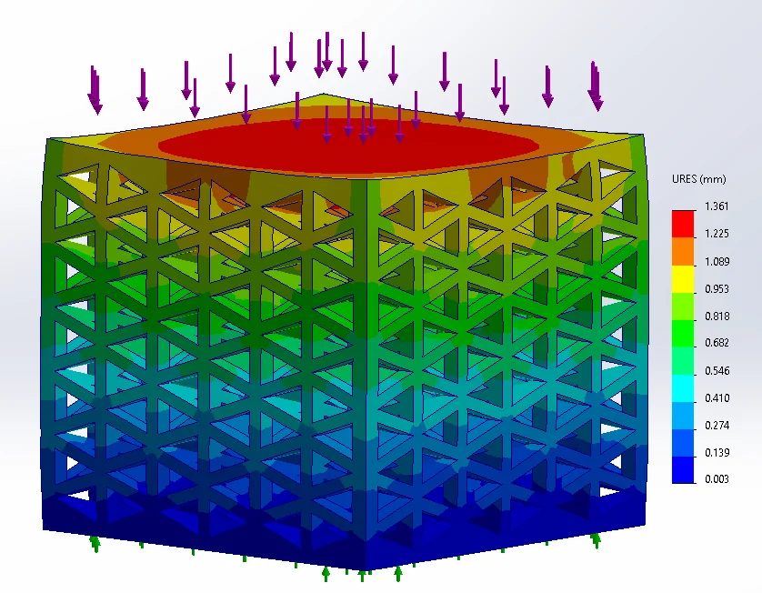
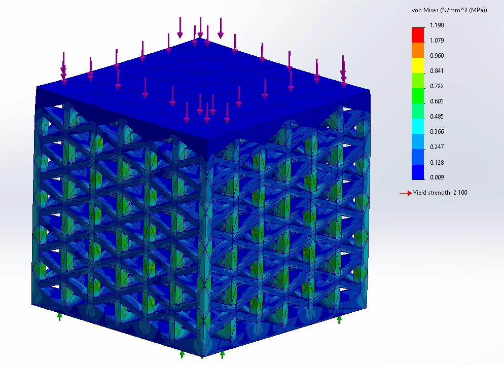
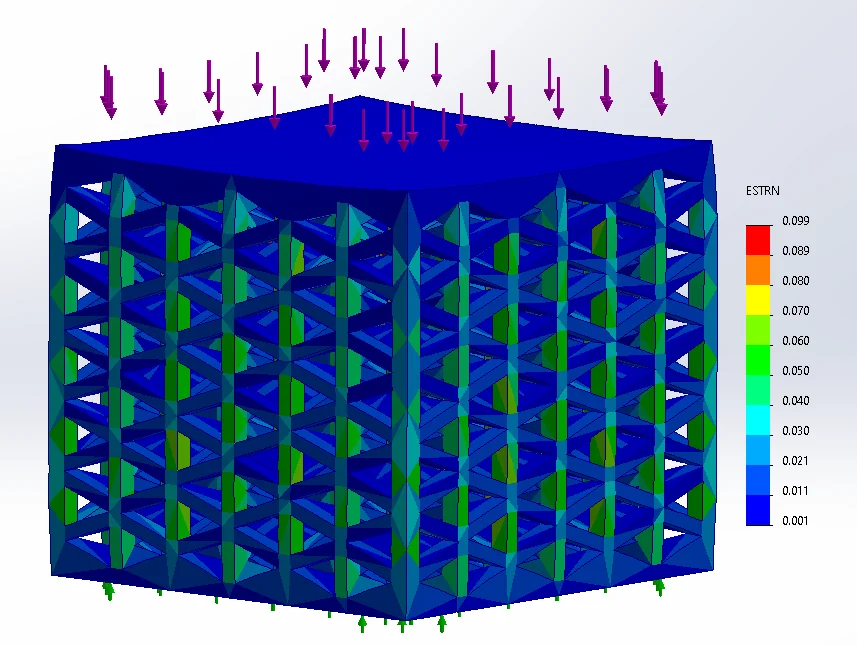
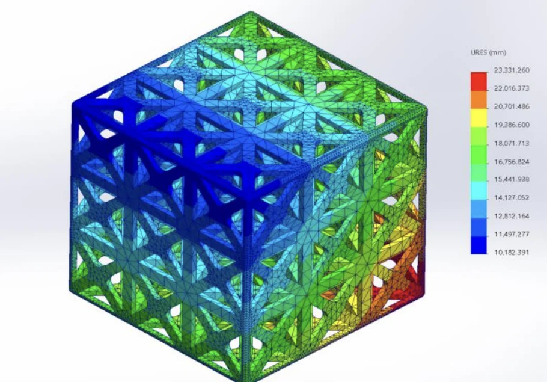
The printed part exposed a problem that no simulation had flagged.
The initial prototype revealed challenges with removing support material from the internal geometry. The design was subsequently modified by adding walls that allowed the support material to remain within the structure rather than requiring removal that could potentially damage the internal lattice.
That change traded porosity and mass for a part that could actually be manufactured and tested — and it is the reason the measured porosity and mass differ so much from the modelled values.
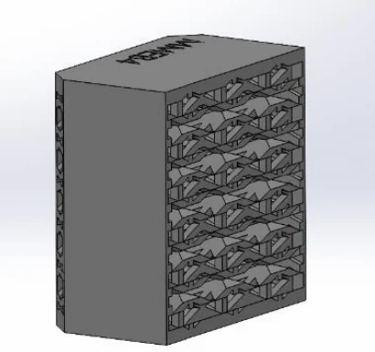
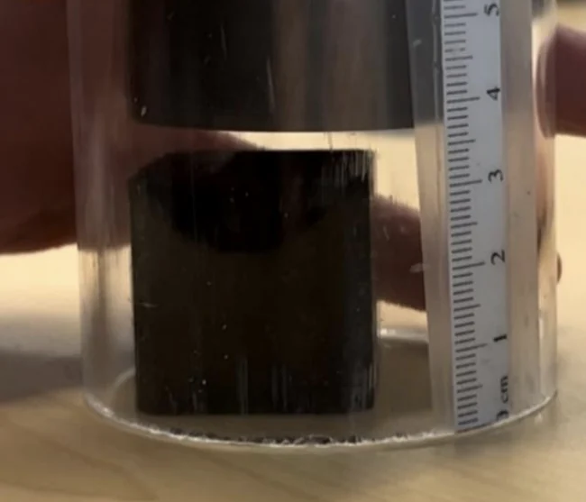
Figures reported by the team from static testing, dynamic testing, and the economic analysis.
The cost figures are estimates from the team's economic analysis, and the percentage differences are comparisons between measured and modelled values rather than guaranteed performance. Dynamic results diverged much further from the model, largely because of the design change and the difficulty of measuring from video.
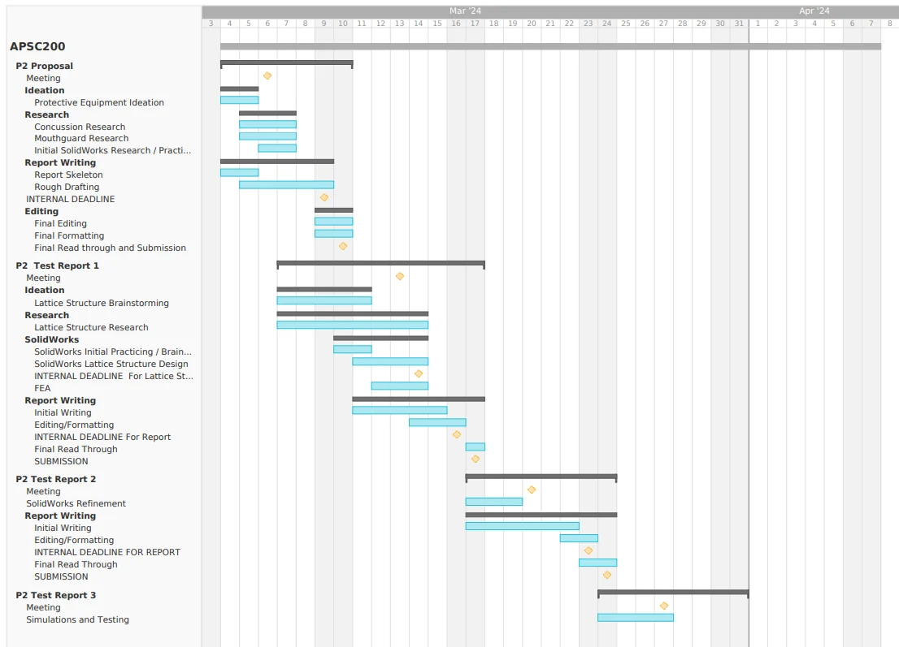
My contribution
I contributed to the final design presentation, conclusions and recommendations, and the analysis of how the mouthguard could be adapted across different sports. I also contributed to the overall editing and refinement of the report.
This was a four-person team project. The concept generation, simulation work, economic analysis and testing were shared across the group, and the final design decision was made collectively.
I developed experience using CAD and FEA to evaluate a design before committing to physical prototyping.
I learned that the strongest theoretical design is not necessarily the strongest final design. Manufacturability, testing, cost, and usability can fundamentally influence engineering decisions.
The differences between modelled and dynamic test results reinforced the importance of considering the testing methodology as part of the engineering design process.